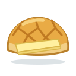

Unit 8
茶餐廳Cha Chaan Teng
奶茶, 鴛鴦, 菠蘿油 and 餐蛋麵 at a Hong Kong café, and ordering them your way: 凍 or 熱, 走甜, 少冰.
Learn
Café drinks and food
Milk tea, coffee and 鴛鴦, hot or iced, toast and noodles, then 走, 少 and 多 to order them your way.
GameOrder Up
Hear what the customer calls and fill in the order ticket: 凍檸茶少甜, 熱奶茶走甜.

GameWrite It
Write 冰, 油 and 走 stroke by stroke with your finger: trace, then from memory, then 默書 from what you hear.
WritingWriting Sheet
Print a practice sheet: each character stroke by stroke in Hong Kong order, to trace and then write.
GameTone Detective
Hear a café word and pick its tones. 走 or 少?
SpeakingSay It Back
Record yourself and compare your tones with a native speaker's pitch curve.